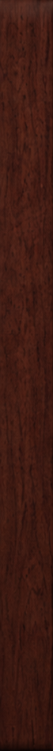
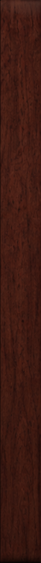

<!doctype html>
<html><head><meta charset="utf-8"><title>RUIN-1 hero options</title>
<style>
@font-face { font-family: Anton; src: url('fonts/anton-latin-400-normal.woff2'); }
@font-face { font-family: InstrSerif; src: url('fonts/instrument-serif-latin-400-normal.woff2'); }
@font-face { font-family: InstrSerif; font-style: italic; src: url('fonts/instrument-serif-latin-400-italic.woff2'); }
@font-face { font-family: Cormorant; font-weight: 300; src: url('fonts/cormorant-garamond-latin-300-normal.woff2'); }
@font-face { font-family: Cormorant; font-weight: 300; font-style: italic; src: url('fonts/cormorant-garamond-latin-300-italic.woff2'); }
@font-face { font-family: Cormorant; font-weight: 500; font-style: italic; src: url('fonts/cormorant-garamond-latin-500-italic.woff2'); }
@font-face { font-family: CourierP; src: url('fonts/courier-prime-latin-400-normal.woff2'); }
@font-face { font-family: SG; src: url('../../src/ui/fonts/space-grotesk.woff2'); }
* { box-sizing: border-box; margin: 0; }
body { width: 1440px; height: 820px; overflow: hidden; }
.h { position: relative; width: 1440px; height: 820px; overflow: hidden; }
.a { position: absolute; }
img.s { display: block; }
a { color: inherit; text-decoration: none; }
</style></head><body><div id="root"></div>
<script>
const SYN = '../../website/assets/shots/hero-mockup.jpg';
const mark = (s, col, fill = col) => `<svg width="${s}" height="${s}" viewBox="0 0 52 52" style="display:block"><path d="M26 4 L49 46 H3 Z" fill="none" stroke="${col}" stroke-width="3.6" stroke-linejoin="round"/><path d="M27 14 L19 30 H25 L20 42 L32 25 H26 L31 14 Z" fill="${fill}"/></svg>`;
const noise = (op, freq = .8, blend = 'multiply') => `<svg class="a" width="1440" height="820" style="left:0;top:0;opacity:${op};mix-blend-mode:${blend};pointer-events:none"><filter id="n${freq}"><feTurbulence type="fractalNoise" baseFrequency="${freq}" numOctaves="3" seed="4"/><feColorMatrix type="saturate" values="0"/></filter><rect width="100%" height="100%" filter="url(#n${freq})"/></svg>`;
const DESC = 'A dark, cinematic synthesizer. Saturated, tape-worn, alive.';

const O = {
// ---------------------------------------------------------------------------------- 1 · BENTO (moodboard 1: audio UI, Behance tiles, aurora gradients)
1: `<div class="h" style="background:#050506;font-family:Inter,sans-serif;color:#f4f4f6">
  <div class="a" style="left:48px;top:30px;display:flex;align-items:center;gap:10px;font-weight:700;font-size:19px;letter-spacing:-.02em">${mark(24, '#fff')}ruin-1</div>
  <div class="a" style="right:48px;top:28px;display:flex;gap:30px;align-items:center;font-family:'Liberation Mono',monospace;font-size:12px;color:#8a8a93;text-transform:uppercase">
    <span>sounds</span><span>ruin chain</span><span>specs</span><span style="background:#fff;color:#000;border-radius:999px;padding:9px 18px;font-family:Inter;font-weight:600;text-transform:none;font-size:14px">Buy — €79</span></div>
  <!-- tile: text -->
  <div class="a" style="left:48px;top:96px;width:420px;height:404px;border-radius:30px;background:#111114;padding:40px">
    <div style="font-family:'Liberation Mono';font-size:12px;color:#8a8a93;text-transform:uppercase">synthesizer · vst3</div>
    <div style="font-weight:700;font-size:118px;letter-spacing:-.06em;line-height:.9;margin:26px 0 22px">ruin-1</div>
    <div style="font-size:19px;line-height:1.45;color:#b8b8c0">A dark, cinematic synthesizer.<br>Saturated, tape-worn, alive.</div>
    <div style="display:flex;gap:10px;margin-top:40px"><span style="background:#fff;color:#000;border-radius:999px;padding:14px 26px;font-weight:600;font-size:15px">Buy now</span><span style="border:1px solid #3a3a40;border-radius:999px;padding:14px 26px;font-weight:500;font-size:15px">▶ Listen</span></div></div>
  <!-- tile: number -->
  <div class="a" style="left:48px;top:514px;width:203px;height:258px;border-radius:30px;overflow:hidden;background:radial-gradient(circle at 50% 120%,#ff6a1a,#c42a8f 45%,#2a0b4a 80%)">
    <div style="position:absolute;left:24px;top:22px;font-family:'Liberation Mono';font-size:11px;text-transform:uppercase;color:rgba(255,255,255,.75)">ruin chain</div>
    <div style="position:absolute;left:22px;bottom:16px;font-weight:700;font-size:130px;letter-spacing:-.06em;line-height:1">8</div>
    <div style="position:absolute;right:20px;bottom:30px;font-size:13px;text-align:right;line-height:1.3">boxes<br>in series</div></div>
  <!-- tile: bars -->
  <div class="a" style="left:265px;top:514px;width:203px;height:258px;border-radius:30px;background:#111114;padding:24px">
    <div style="font-family:'Liberation Mono';font-size:11px;text-transform:uppercase;color:#8a8a93">alive</div>
    <div style="position:absolute;left:24px;right:24px;bottom:56px;height:120px;display:flex;align-items:flex-end;gap:5px">${Array.from({ length: 16 }, (_, i) => `<i style="flex:1;border-radius:3px;height:${30 + 70 * Math.abs(Math.sin(i * 1.7) * Math.cos(i * .4))}%;background:linear-gradient(#36ff8a,#1a9cff)"></i>`).join('')}</div>
    <div style="position:absolute;left:24px;bottom:22px;font-size:13px;color:#b8b8c0">nothing repeats</div></div>
  <!-- tile: synth -->
  <div class="a" style="left:482px;top:96px;width:910px;height:676px;border-radius:30px;overflow:hidden;background:#0c0c10">
    <div class="a" style="left:-120px;right:-120px;bottom:-260px;height:560px;background:radial-gradient(closest-side,#7a3cff 0%,#ff6a1a 45%,transparent 75%);filter:blur(40px);opacity:.75"></div>
    
    <div class="a" style="left:32px;top:28px;font-family:'Liberation Mono';font-size:11px;text-transform:uppercase;color:#8a8a93">osc page · preset “cavern”</div>
    <div class="a" style="right:32px;top:26px;display:flex;gap:8px">${['#7a3cff', '#ff6a1a', '#36ff8a'].map((c) => `<i style="width:12px;height:12px;border-radius:50%;background:${c}"></i>`).join('')}</div></div>
</div>`,

// ---------------------------------------------------------------------------------- 2 · RED ROOM (moodboard 2: cinema stills, Lynch, Villeneuve)
2: `<div class="h" style="background:#000;font-family:Cormorant,serif;color:#f1e6d4">
  <!-- curtains -->
  <div class="a" style="left:0;top:0;width:1440px;height:640px;background:repeating-linear-gradient(90deg,#3a0302 0,#7e0b08 22px,#b4170f 40px,#7e0b08 58px,#3a0302 80px);"></div>
  <div class="a" style="left:0;top:0;width:1440px;height:640px;background:radial-gradient(ellipse 40% 70% at 50% 35%,rgba(255,180,120,.28),transparent 70%),linear-gradient(rgba(0,0,0,.55),transparent 30%,transparent 70%,rgba(0,0,0,.7))"></div>
  <!-- chevron floor -->
  <div class="a" style="left:-400px;top:520px;width:2240px;height:700px;transform-origin:50% 0;transform:perspective(500px) rotateX(62deg);background:linear-gradient(135deg,#ece2cf 25%,transparent 25%) -40px 0/80px 80px,linear-gradient(225deg,#ece2cf 25%,transparent 25%) -40px 0/80px 80px,linear-gradient(315deg,#ece2cf 25%,transparent 25%) 0 0/80px 80px,linear-gradient(45deg,#ece2cf 25%,transparent 25%) 0 0/80px 80px,#15110e"></div>
  <div class="a" style="left:0;top:520px;width:1440px;height:300px;background:linear-gradient(rgba(0,0,0,.65),rgba(0,0,0,.2) 40%,rgba(0,0,0,.6))"></div>
  <!-- the synth, standing in the room -->
  <div class="a" style="left:470px;top:560px;width:500px;height:40px;border-radius:50%;background:rgba(0,0,0,.75);filter:blur(14px)"></div>
  
  <!-- title, a film title card over the curtain -->
  <div class="a" style="left:0;width:1440px;top:118px;text-align:center"><div style="font-weight:300;font-style:italic;font-size:122px;line-height:1;letter-spacing:.02em">Ruin–1</div>
    <div style="font-weight:300;font-size:18px;letter-spacing:.5em;margin-top:6px;text-indent:.5em;opacity:.8">A SYNTHESIZER</div></div>
  <!-- letterbox -->
  <div class="a" style="left:0;top:0;width:1440px;height:70px;background:#000"></div>
  <div class="a" style="left:0;bottom:0;width:1440px;height:110px;background:#000"></div>
  <div class="a" style="left:56px;top:24px;font-style:italic;font-weight:500;font-size:20px">Ruin–1</div>
  <div class="a" style="right:56px;top:26px;display:flex;gap:34px;font-style:italic;font-size:18px;opacity:.75"><span>sounds</span><span>the chain</span><span>specs</span><span>buy</span></div>
  <!-- subtitle -->
  <div class="a" style="left:0;width:1440px;top:726px;text-align:center;font-family:Inter,sans-serif;font-weight:500;font-size:25px;color:#f6e36a;text-shadow:0 2px 3px #000">It sounds like a room you have been in before.</div>
  <div class="a" style="left:56px;bottom:26px;font-style:italic;font-size:21px;border-bottom:1px solid rgba(241,230,212,.6);padding-bottom:2px">Buy now</div>
  <div class="a" style="left:180px;bottom:26px;font-style:italic;font-size:21px;opacity:.7">Listen to a scene ▸</div>
  <div class="a" style="right:56px;bottom:30px;font-family:Inter;font-size:11px;letter-spacing:.3em;opacity:.45">VST3 · STANDALONE · OFFLINE</div>
</div>`,

// ---------------------------------------------------------------------------------- 3 · THE INSTRUMENT (moodboard 3: the synth's own panel language)
3: `<div class="h" style="background:#0d0c0b;font-family:SG,sans-serif;color:#ece6df">
  <div class="a" style="left:0;top:0;width:1440px;height:820px;background:radial-gradient(ellipse 60% 70% at 50% 45%,#1b1816,#0b0a09 80%)"></div>
  ${noise(.35, .9, 'overlay')}
  
  
  <!-- the header strip, as the synth's -->
  <div class="a" style="left:96px;right:96px;top:26px;display:flex;align-items:center;border-bottom:1px solid rgba(255,255,255,.08);padding-bottom:22px">
    <div style="display:flex;align-items:center;gap:18px">${mark(44, '#d89a50')}<div><div style="font-weight:500;font-size:24px;letter-spacing:.42em">RUIN-1</div><div style="font-size:9px;letter-spacing:.85em;color:#8f8983;margin-top:4px">SYNTHESIZER</div></div></div>
    <div style="margin-left:auto;display:flex;gap:30px;font-size:13px;letter-spacing:.16em;color:#9a948d"><span style="color:#fff;border-bottom:2px solid #fff;padding-bottom:6px">OVERVIEW</span><span>SOUNDS</span><span>RUIN</span><span>FX</span><span>SPECS</span><span style="color:#ffb060">BUY</span></div></div>
  <!-- left: a box the way the synth draws its boxes -->
  <div class="a" style="left:96px;top:150px;width:372px;height:560px;border:1px solid rgba(255,255,255,.08);background:rgba(0,0,0,.35);padding:26px 26px">
    <div style="display:flex;align-items:center;gap:10px;font-size:13px;letter-spacing:.3em"><i style="width:3px;height:16px;background:#ff8a2a;box-shadow:0 0 8px #ff8a2a"></i>OVERVIEW</div>
    <svg width="320" height="120" style="margin:26px 0 20px;display:block"><path d="${Array.from({ length: 161 }, (_, i) => `${i ? 'L' : 'M'}${i * 2} ${60 - 38 * Math.sin(i / 160 * Math.PI * 6) * (0.6 + 0.4 * Math.sin(i / 23))}`).join(' ')}" fill="none" stroke="#ff9a40" stroke-width="2" style="filter:drop-shadow(0 0 6px #ff7a20)"/></svg>
    <div style="font-size:42px;font-weight:500;letter-spacing:.16em;line-height:1.15">DARK.<br>WORN.<br>ALIVE.</div>
    <p style="font-family:Inter;font-size:15.5px;line-height:1.65;color:#b3ada6;margin:22px 0 30px">Two oscillators, a sub, fourteen textures and an eight-box distortion chain, built for the sound that sits in a dark room.</p>
    <div style="display:flex;gap:26px;font-size:13px;letter-spacing:.2em"><span style="display:flex;align-items:center;gap:9px"><i style="width:9px;height:9px;border-radius:50%;background:#ffb060;box-shadow:0 0 10px #ff8a2a"></i>BUY NOW</span><span style="display:flex;align-items:center;gap:9px;color:#9a948d"><i style="width:9px;height:9px;border-radius:50%;border:1px solid #6e6964"></i>LISTEN</span></div></div>
  <!-- right: the instrument, straight on -->
  
  <div class="a" style="left:490px;top:630px;width:854px;display:flex;justify-content:space-between;font-size:11px;letter-spacing:.3em;color:#6e6964"><span>8 VOICES</span><span>2 OSC + SUB</span><span>8-BOX RUIN CHAIN</span><span>14 TEXTURES</span><span>FULLY OFFLINE</span></div>
</div>`,

// ---------------------------------------------------------------------------------- 4 · SWISS POSTER (Müller-Brockmann, International Typographic Style)
4: `<div class="h" style="background:#ebe7de;font-family:Inter,sans-serif;color:#111">
  ${noise(.18, .9)}
  <div class="a" style="left:0;top:0;width:1440px;height:820px;background:repeating-linear-gradient(90deg,transparent 0 119px,rgba(0,0,0,.05) 119px 120px)"></div>
  <div class="a" style="left:830px;top:180px;width:620px;height:620px;border-radius:50%;background:#e3241b"></div>
  <div class="a" style="left:40px;top:4px;font-family:'Inter Display',Inter;font-weight:900;font-size:330px;letter-spacing:-.06em;line-height:1">RUIN<span style="color:#e3241b">-1</span></div>
  
  <div class="a" style="left:48px;top:420px;width:360px;font-weight:600;font-size:30px;line-height:1.12;letter-spacing:-.02em">Synthesizer<br>for dark, cinematic<br>music.</div>
  <div class="a" style="left:48px;top:560px;width:300px;font-size:15px;line-height:1.5">Saturated, tape-worn, alive. Two oscillators, a sub, fourteen textures, an eight-box distortion chain.</div>
  <div class="a" style="left:48px;top:700px;display:flex;gap:0"><span style="background:#111;color:#ebe7de;padding:16px 26px;font-weight:600;font-size:16px">Buy now →</span><span style="border:2px solid #111;padding:14px 26px;font-weight:600;font-size:16px">Listen</span></div>
  <div class="a" style="left:420px;top:428px;font-size:13px;line-height:1.75;font-weight:500">01 Sound<br>02 Ruin chain<br>03 Requirements<br>04 Buy</div>
  <div class="a" style="left:420px;top:700px;font-size:12px;line-height:1.5;color:#555">VST3<br>Standalone<br>Offline</div>
  <div class="a" style="right:48px;top:20px;display:flex;align-items:center;gap:10px;font-weight:600;font-size:13px">${mark(26, '#111')}</div>
</div>`,

// ---------------------------------------------------------------------------------- 5 · 1977 HI-FI CATALOGUE (Japanese audio brochures, 70s stripes)
5: `<div class="h" style="background:#efe3c8;font-family:InstrSerif,serif;color:#3a2314">
  ${noise(.22, .7)}
  <div class="a" style="left:0;top:560px;width:1440px">${['#3a2314', '#8a3b12', '#d4661c', '#e8a32a', '#efe3c8'].map((c, i) => `<div style="height:${i === 4 ? 0 : 26}px;background:${c}"></div>`).join('')}</div>
  <div class="a" style="left:0;width:1440px;top:30px;display:flex;justify-content:center;gap:46px;font-size:18px;letter-spacing:.06em"><span>Sounds</span><span>The chain</span><span style="display:flex;align-items:center;gap:10px;font-style:italic;font-size:26px">${mark(26, '#3a2314')}Ruin–1</span><span>Specifications</span><span>Order</span></div>
  <div class="a" style="left:0;width:1440px;top:104px;text-align:center;font-style:italic;font-size:64px;line-height:1.05">The Ruin–1. A synthesizer<br>for the late, dark hours.</div>
  <div class="a" style="left:395px;top:262px;padding:12px;background:#fbf6ea;box-shadow:0 18px 30px rgba(58,35,20,.35)"></div>
  <div class="a" style="left:96px;top:300px;background:#3a2314;color:#efe3c8;border-radius:10px;padding:14px 18px;font-family:Inter;font-weight:700;font-size:12px;letter-spacing:.2em;line-height:1.5">MODEL<br><span style="font-family:InstrSerif;font-weight:400;font-size:34px;letter-spacing:0">RUIN–1</span></div>
  <div class="a" style="left:96px;top:690px;width:270px;font-size:20px;line-height:1.35">Saturated, tape-worn and alive: warmth you can hear from across the room.</div>
  <div class="a" style="left:1080px;top:262px;width:300px;font-family:Inter;font-size:12.5px;color:#3a2314">
    <div style="font-family:InstrSerif;font-style:italic;font-size:24px;margin-bottom:10px">Specifications</div>
    ${[['Voices', '8'], ['Oscillators', '2 + sub'], ['Ruin chain', '8 boxes'], ['Drive types', '10'], ['Textures', '14'], ['Network', 'none']].map(([k, v]) => `<div style="display:flex;justify-content:space-between;border-bottom:1px solid rgba(58,35,20,.3);padding:7px 0"><span style="letter-spacing:.12em;text-transform:uppercase">${k}</span><b>${v}</b></div>`).join('')}</div>
  <div class="a" style="left:1080px;top:700px;display:flex;gap:22px;align-items:center;font-family:Inter;font-size:15px;font-weight:600"><span style="background:#8a3b12;color:#fbf6ea;border-radius:999px;padding:14px 28px">Order now</span><span style="border-bottom:1.5px solid #3a2314">Hear it</span></div>
</div>`,

// ---------------------------------------------------------------------------------- 6 · XEROX ZINE (DIY photocopy flyers, 80s/90s underground)
6: `<div class="h" style="background:#d9d6cf;font-family:CourierP,monospace;color:#111">
  ${noise(.55, .55)}
  <div class="a" style="left:60px;top:-30px;font-family:Anton;font-size:380px;line-height:1;letter-spacing:-.01em;color:#111;transform:rotate(-1.5deg)">RUIN-1</div>
  <!-- the photocopied synth, taped on -->
  <div class="a" style="left:640px;top:250px;transform:rotate(2.5deg);background:#f2f0ea;padding:14px 14px 40px;box-shadow:2px 3px 0 rgba(0,0,0,.25)">
    <div style="position:relative">
      <div style="position:absolute;inset:0;background:radial-gradient(circle,rgba(0,0,0,.35) 1.1px,transparent 1.6px) 0 0/5px 5px;mix-blend-mode:multiply"></div></div>
    <div style="font-size:14px;margin-top:10px">fig. 1 — the instrument. 8 voices, 14 textures, no internet.</div></div>
  ${[[650, 236, -20], [1290, 262, 25], [636, 700, 15]].map(([x, y, r]) => `<div class="a" style="left:${x}px;top:${y}px;width:120px;height:34px;background:rgba(232,220,180,.75);transform:rotate(${r}deg);box-shadow:0 1px 2px rgba(0,0,0,.2)"></div>`).join('')}
  <!-- typed label -->
  <div class="a" style="left:64px;top:440px;width:470px;background:#f7f5ef;padding:24px 26px 28px;transform:rotate(-1deg);clip-path:polygon(0 3%,6% 0,20% 2%,40% 0,62% 3%,80% 0,100% 2%,99% 40%,100% 97%,70% 100%,45% 98%,20% 100%,0 98%)">
    <div style="font-size:19px;line-height:1.55">a dark, cinematic synthesizer.<br>saturated. tape-worn. alive.<br>made for the sound that sits<br>in a dark room.</div></div>
  <div class="a" style="left:64px;top:690px;display:flex;gap:16px;align-items:center"><span style="background:#111;color:#e9e6df;font-family:Anton;font-size:30px;letter-spacing:.02em;padding:8px 24px">BUY NOW</span><span style="border:3px solid #111;font-family:Anton;font-size:30px;padding:5px 22px">LISTEN →</span></div>
  <div class="a" style="left:1200px;top:110px;width:170px;height:170px;border:4px solid #c8231b;border-radius:50%;color:#c8231b;display:grid;place-items:center;text-align:center;font-family:Anton;font-size:24px;line-height:1.1;transform:rotate(-14deg);opacity:.85">LIVE<br>· OFFLINE ·<br>VST3</div>
  <div class="a" style="left:64px;top:792px;font-size:15px">ruin-1 // sounds / the chain / specs / buy</div>
  <div class="a" style="right:60px;top:780px">${mark(30, '#111')}</div>
</div>`,
};
document.getElementById('root').innerHTML = O[+(new URLSearchParams(location.search).get('v') || 1)];
document.fonts.ready.then(() => setTimeout(() => (document.title = 'done'), 300));
</script></body></html>
